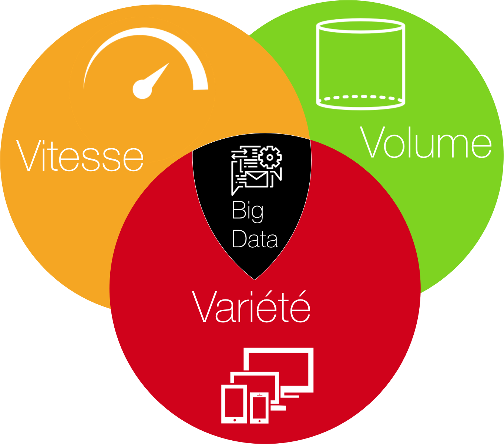

Généralités sur le Big Data
Qu'est-ce que c'est ?
Créé par David RIGAUX, Mehdi DALAA, Mandry MBUNDU, Maxime LUNDQUIST - CPI1 C2
TIPE
2015-2016
Sommaire
Introduction
1.
Historique du Big Data
2.
Domaines d'application
3.
Outils informatiques et outils mathématiques pour le Big Data
Introduction
Nous créons environs 2,5 trillions d'octets de données par jour. En 2 ans nous avons créé 90% des données présentes dans le monde.
Terme BigData signifie litéralement Mégadonnées, grosses données ou données massives. Ces ensembles sont tellement grand qu'il est difficile de les manipuler avec des outils classiques de gestion de base de données.
Big Data
Types de données
Messages que nous nous envoyons
Vidéos que nous publions
Informations climatiques
Signaux GPS
Enregistrements transactionnels d'achats en ligne
Et bien encore
Le Big Data est caractérisé par les 3V.
Volume : En effet, la quantité de données générée est en pleine expansion et suit une loi quasi exponentielle : e-commerce, réseaux sociaux
Vélocité (Rapidité) : La rapidité renouvellement des données n'est plus à démontrer. Nouvelles mise à jours sont stockés en respect de la devise du big data qui est de tout garder.
Variété : Les Bases de données spécialisées sont en mesure de gérer la multiplicité des formats de données : numérique, texte, image...
Les 3 V

Certaines personne du monde du Big Data pense qu’il n’est pas inutile d’ajouter 2V, pour la valeur et la véracité des données, c’est-à-dire l’utilité et la précision de la donnée.
5V ?
Certains caractérisent le Big Data avec cinq V
Donc le Big Data représente des données trop volumineuses pour être manipulée avec des bases de données relationnelles.
Le modèle relationnel des bases de donnée qu’est ce que c’est ?
C’est un modèle qui a été introduit en 1970 par un informaticien d’IBM Edgard Codd.
Le but : établir une séparation + claire entre la représentation physique et logique des données.
C’est ce que l’on cherche dans un SGBD : indépendance physique et logique des données.
Edgard Codd
Inventeur du modèle relationnel des bases de données
Mais à partir des années 2000, avec l’explosion d’internet et le développement des technologies mobiles, les échanges d’information numériques ont considérablement augmentés. Du coup les bases de données relationnelles ont été dépassé. On a donc vu apparaître un nouveau type de base de donnée et système de base de données qui vont s’appeler NOSQL comme leur nom l’indique ne sont pas manipulé uniquement avec des requêtes sql.
Les premiers a avoir été confronté aux limites des bases de données relationnels sont les grandes entreprises du web. Comme Ils doivent gérer un énorme volume de données. Ils ont du créer leur propre système de gestion base de base de données:
Pour exemple : Google qui doit pouvoir stocker une énorme quantité de donnée, et alimenter continuellement ce stock mais qui doit également effectuer un traitement de ces données a développé son propre système de fichier distribué GoogleFS en 2003 puis Big Table en 2006. D’autre entreprise du web vont suivre et dvpé leur propre SGBD, on retiendra Amazon ou encore Facebook.
Google lance Big Table en 2006
D’autre entreprise du web vont suivre et dvpé leur propre SGBD, on retiendra Amazon ou encore Facebook
D'autre entreprises du web ont lancé leur propre système de gestion de base de données
Facebook avec
Par la suite l’américain Doug Cutting s’inspira de GFS et Big Table pour lancer le prototype open source Hadoop en 2008 qui grâce à son modèle de programmation et à son système de fichier hautement distribué est capable de gérer de gigantesques quantités de données non structurées. Hadoop est une technologie qui fait aujourd’hui référence dans l’univers du Big Data.
Il faut savoir que les systèmes de base de données relationnels ne sont pas pour autant disparu, il reste majoritaire mais montrent cependant leurs limites lorsqu'ils sont utilisés dans un périmètre plus large, tel qu'un site web populaire, visité par des millions d’utilisateurs à travers le mondeg
Hadoop lancé par Doug Cutting en 2008
Domaines d'application
Avant l’émergence du Big Data, des cas d’usages de cette technologie existaient déjà.
Domaines d'application
On voit par ces cas d’usages que le Big Data touche tous les secteurs et toutes les
sociétés (néanmoins une très grande partie) et nous allons vous présenter l’impact
du big data dans le marketing
Pressentir la naissance d’une tendance Prédire l’évolution d’un phénomène Repérer des corrélations pour optimiser une stratégie Faire des contrôles pour découvrir une fraude Organiser une communication virale
Etant tous des consommateurs, le nombre de consommateur est très important, donc il y a énormément de données à analyser, pour pouvoir influencer le comportement de nouveaux clients, sans perdre les anciens clients.
Au vu du nombre de données à analyser, c'est ici qu'intervient le Big Data
Le Marketing
Le marketing désigne l'analyse des besoins des consommateurs et l'ensemble des moyens d'action utilisés par les organisations pour influencer leur comportement
Pour pouvoir influencer les clients, les entreprises doivent commencer par analyser le comportement des clients.
L'analyse du comportement en marketing commence par, par exemple en grande distribution, l'étude de la carte de fidélité du client, l'enseigne peut donc analyser les habitudes de consommation des clients et traiter les données pour pouvoir effectuer une analyse prédictive càd se servir des analyses du passé pour prédire le futur. Cette analyse permet enfaite de :
Analyse du comportement
On peut même aller plus loin que cela grâce aux nouvelles innovations, en effet, nous pouvons désormais suivre en temps réel le mouvement des consommateurs dans le magasin ( temps passé dans un rayon, nombre de pas effectués ) grâce à des capteurs localisés dans le boitier des caddies, mais cela que dans le périmètre du magasin
L'aménagement du magasin ré-organisation des produits en rayon sur les étagères
Ceci va permettre de faire un profil personnalisé de chaque client, ainsi faire de la micro segmentation c'est-à-dire les classer ( par sexe, âge, revenu, religion...)
La é-réputation, c'est l'image dans notre cas, de l'entreprise sur les réseaux sociaux, c'est donc pour les entreprises le reflet de l'opinion publique.
Les entreprises peuvent donc visualiser en direct l'impact de leur marque, afin de pouvoir anticiper les mauvaises critiques, qui pourraient tâcher l'image de l'entreprise, ou avoir de réels dégâts sur l'enseigne
Le Big Data intervient également dans l’optimisation des prix, en effet, en 2016, environ 80% de la population française fait des achats sur internet, soit 50 millions de personnes. Ainsi, sans même que les usagers ne le sachent, le prix du marché est basé sur le " dynamic pricing " c’est-à-dire que le prix varie selon la demande mais pas uniquement sur l’achat, également le temps passé sur ce produit (sans même l’acheter, car cela signifie que le client le désire et donc le prix peut quand même augmenter.
L'optimisation des prix
Mais pour mettre tout cela en place, il faut savoir que le big data repose sur des outils mathématiques et informatiques à ne pas négliger
Outils informatiques et outils mathématiques pour le Big Data
Le cloud computing est l’exploitation de la puissance ou de stockage de serveurs informatiques en passant par un réseau, généralement internet. Le cloud computing et le big data sont deux concepts liés car c’est grâce au cloud computing que nous pouvons traiter du Big Data sur nos laptop.
Cloud Computing
Big Data et Cloud Computing, deux concepts liés
Logiciel respecte criteres établis par l'Open Source initiative
Vendre ou "donner" le logiciel
Permet de modifier le code et créer des travaux dérivé
Open-Source
Libre redistribution Accès au code source Évolution d'un projet peut être très rapide
Permet une montée en charge approximativement linéaire
Grande rapidité, simplicité et des méthodes de développements agiles
Dépourvus de transaction : NON ATOMIQUE (Tout ou rien)
Non relationnelles
NoSQL
"Not Only"SQL
Clustérisables Dépourvus de schéma Dépourvus de transactions Non-relationnelles Open-Source
Agrégat : cumul de données.
BDOD : Suite ordonnée de clé-valeur
BDOC : Structuré en colonnes au lieu de lignes (plus facile à ajouter des colonnes que des lignes)
BDOG : Orienté objet utilisant la théorie des graphes + facile à comprendre / - de compléxité
Différentes catégories de solutions NoSQL
Base de données orienté agrégats (BDOA)
Entrepôts clé-valeur
Bases orientées documents
Bases orientées colonnes
Base de données orientées graphiques
Modèle de programmation récent, qui permet d'automatiser déploiement de traitements massivement sur clusters.
Mapping : Traite données d'entrée et produit des paires clé-valeur
Reduce : Prend ensuite les paires de clés et les combines l'une avec l'autre
Calcul parallèle puis traite les données ensemble
MapReduce
Projet Open-source de Apache
L'un des seuls qui arrivent à s'attaquer à des gros volumes de données
Open Source => Communauté très active et très dynamique
Hadoop
Open-source
ZooKeeper: Gestion de configuration
HBase: Système Gestion de base de données
Ambari: Supervision
Pig: Plateforme Haut niveau
Hive: entrepot d'analyse, synthèse
HDFS: Système de fichier
oozie: Ordonnance de flux
sqoop: Terminal servant à transferer données BD relationnelles à Hadoop
Composants de Hadoop
Fondées par experts de Hadoop
Ajoute propre interface graphique
basé sur hadoop
Les outils mathématiques
Les mathématiques font partie intégrale du big data et lui sont indispensable
Le Big Data a contraint les mathématiques à s'adapter à de tels volumes
Les mathématiques sont utilisés dans un processus d'analyse, d'explo et de traduction
Data Mining
Data mining = Outils pour faciliter l'exploration et l'analyse des données d'une base décisionelle
Efficace pour extraire des informations à partir de grosses qtés de données
Avec l'augmentation de la capacité de stockage des supports informatique, on peut stocker n maximum de données dans le Data Warehouse
Il y a différentes techniques d'analyse que l'on choisit selon le type de données et l'étude que l'on veut entreprendre
Analyse
1ère étape :
Collecter les données (Partie la plus importante) les plus "propres" possibles
2ème étape :
S'assurer que la quantité de données soit suffisante pour ne pas fausser les résultats
3ème étape :
On analyse celle-ci à l'aide de méthodes mathématiques
Les 3V ont modifié l'approche de la stat traditionnelle
Le nb de variables peut dépasser la taille de l'échantillon
Statistiques
Statistiques traditionnelles : Plus un sondeur va acquérir des données, plus le pourcentage d'erreur sera faible Statistiques du Big Data : Chaque individu a beaucoup de données
Fléau de dimensionnalité
Apprentissage
Ensemble des méthodes maths qui permettent dans les grands espaces de données, classer des éléments, de regrouper des parties semblables de l'échantillon ou encore prédire quels facteurs expliquent tel effet
Cela revient à tracer la meilleure courbe passant par tout les paramètres connus et à répéter ce processus sur un autre individu.
Machine Learning
Concerne la conception, l'analyse, le développement et l'implémentation de méthodes permettant à une machine de réaliser des tâches complexes grâce a des algorithmes.
VISUALISATION DE DONNEES
La visualisation de données va aider les data scientists ou bien même les décideurs à voir ce que les stats ne montrent pas.
Préparation des données
Choix d'un modèle
Apprentissage
Optimisation
Prédiction
FIN
Merci pour votre écoute